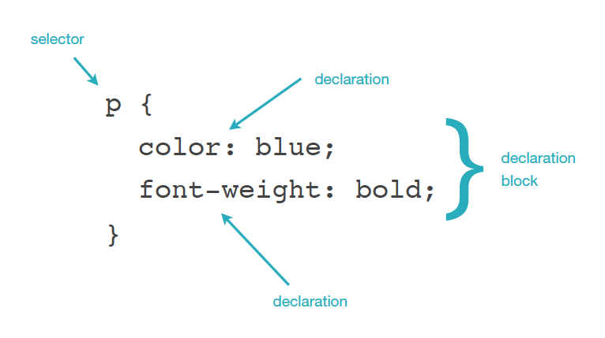
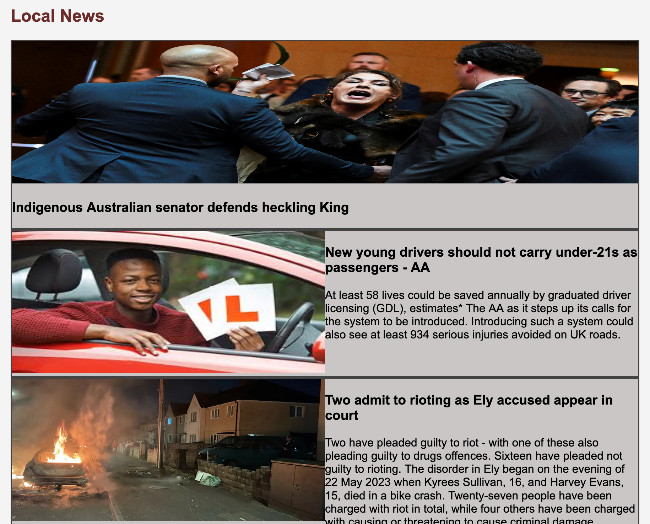
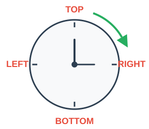

This week we'll build upon your CSS foundation by exploring advanced selectors, understanding the crucial difference between block and inline elements, and mastering the Box Model - the foundation of all web layout.
3-Hour Session Structure
🕐 Part 1: CSS Selectors (45 mins)
- Element, class, and ID selectors
- Descendant and child selectors
- Grouping selectors
- Specificity basics
- Exercise: Practice targeting elements with different selectors
🕑 Part 2: Block vs Inline Elements (45 mins)
- Understanding block-level elements
- Understanding inline elements
- When to use <div> and <span>
- The display property
- Exercise: Experiment with block and inline behavior
☕ Break (15 mins)
🕒 Part 3: The Box Model & Portfolio Task (75 mins)
- Understanding the box model: content, padding, border, margin
- box-sizing property
- Spacing techniques
- Practical layout exercises
- Portfolio Task: Create Leeds Attractions page with proper spacing and layout
Some more Selectors
In the tutorial that introduced CSS we covered a lot of ground. You learnt what a CSS rule looked like, what a selector and declaration were, how to add CSS to your HTML and how to style text and add background images to your pages. We also looked at colour and many of the important styles that we can apply to text. This tutorial will build upon that good start in CSS and will start with a look at selectors.
From the last tutorial on CSS we know that a style rule looks like:
p {
color: blue;
font-weight: bold;
}
CSS Selectors
Element Selectors
An element selector is what we see in the example above. The selector selects elements in your HTML. We can also select many different types of elements all at once by typing commas between them, e.g.
h1,
h2,
h3,
p,
ul {
color: #FFCC00;
}This is great but there are limitations. For instance what if you wanted to change one particular paragraph to a different colour?
Class Selectors
Every HTML element can carry a class attribute. It is used to identify that element from other elements on the page. Its value should start with a letter or an underscore (not a number or any other character).
This now gives us the ability to be able to do things like style one paragraph a certain colour over another. Here's an example showing three paragraphs, where only the middle one has a class attribute:
<p>This is a normal paragraph with the default text color.</p>
<p class="pullquote">Every time I view the sea I feel a calming sense of security,
as if visiting my ancestral home; I embark on a voyage of seeing.</p>
<p>This is another normal paragraph with the default text color.</p>In our CSS we could write a rule to target this class as such. A class selector always starts with a full stop:
.pullquote {
color: orange;
}Live Example:
This is a normal paragraph with the default text color.
Every time I view the sea I feel a calming sense of security, as if visiting my ancestral home; I embark on a voyage of seeing.
This is another normal paragraph with the default text color.
Notice how only the middle paragraph with the class="pullquote" attribute is styled in orange, while the other paragraphs remain the default color.
We will use classes a lot when using <div>'s and sectioning elements to lay out our pages.
Multiple Classes
It is possible to attach several classes to a single item so that they inherit a number of different styles. To write this in your html you would create a space between them like so:
<!-- HTML -->
<div class="button">Normal Button</div>
<div class="button red-button">Red Button</div>
<div class="button blue-button">Blue Button</div>
<!-- CSS -->
.button {
padding: 10px 20px;
border: none;
border-radius: 5px;
font-weight: bold;
cursor: pointer;
}
.red-button {
background-color: #e74c3c;
color: white;
}
.blue-button {
background-color: #3498db;
color: white;
}Live Example:
Notice how the red and blue buttons inherit the padding, border-radius, and font-weight from the .button class, but add their own background color and text color.
Modular CSS
This is good coding as it makes your code very modular. You create a library of styles and add certain ones depending on what appearance you are wanting. This approach is called "composition" and is used heavily in modern CSS frameworks.
ID Selectors
ID's are like classes and at one time were used far more. More recently classes are the preferred method to select named elements but it is useful to know ID's exist as you might encounter them occasionally. Unlike classes an ID of a certain name should only be used once on a page. An ID is written in HTML as shown below:
<div id="page-wrap">
<!-- all page content here -->
</div>In your CSS an ID selector always starts with a hash, e.g.
#page-wrap {
width: 80%;
margin: 0 auto;
}Descendant Selectors
Descendant selectors target elements that are contained within other elements. These elements are descendants of the containing element. For instance we could target all list items in only unordered lists by applying a style rule of:
ul li {
color: #FFCC00;
}Only the list items in unordered lists would be effected. Those in ordered lists or definition lists would not. To show an item is a descendant we just leave a space between the parent and child element.
The following rule would target any text that was emphasized in an h1, h2 or h3 tag:
h1 em,
h2 em,
h3 em {
color: red;
}Live Example - Descendant Selectors:
Heading with emphasized text inside
This paragraph has normal styling
- Unordered list item 1 (red and bold)
- Unordered list item 2 (red and bold)
- Ordered list item 1 (blue and italic)
- Ordered list item 2 (blue and italic)
Notice how ul li only styles the unordered list items,
ol li only styles the ordered list items, and
h3 em only styles emphasized text inside h3 headings!
📝 Exercise 1 - Style a Music Playlist
Time to put your CSS selector skills to the test! You've been given a music playlist page that needs styling. Use element selectors, class selectors, descendant selectors, and attribute selectors to make it look awesome.
In this exercise you'll practice:
- Element selectors - Style all headings and paragraphs
- Class selectors - Target featured songs, new releases, and classics
- Descendant selectors - Style songs only within specific playlist sections (Rock, Pop, Chill)
- Attribute selectors - Style songs based on their genre and mood attributes
Open the class-exercises.zip file in today's tutorial folder on MyBeckett. Unzip and follow the 13 numbered TODO instructions in the CSS section. Each task tells you exactly which selector to use and what to style.
💡 Hint
Don't worry about padding, margins, or layout yet - we'll cover that in Exercise 2. For now, focus on colors, fonts, and text styling using the different types of selectors you've learned. All the TODO tasks are clearly marked in the CSS - just follow them in order!
Direct Descendant Selector
Sometimes you don't want to apply a style to any
possible child, but only to the direct children. This can
be done with the > symbol. Use it between selectors
to limit the application to the direct children of the parent.
For example, this rule, if applied to the HTML of the previous selector, would cause the links in the intro section to be larger, but not the links in any nested quotes or blockquotes:
.intro > a {
font-size: large;
}In this codepen only the paragraphs that are a direct descendant (first-child) of the container have their colour changed.
View Direct Descendant Example on CodePenUniversal Selector
Applies to all elements in the document:
* {
border: 1px solid black;
}Powerful When Combined
This can be more powerful when combined with other selectors:
body > * {
margin-left: 10px;
} /* all the _direct_ children of the body receive the margin */
p * {
text-decoration: underline;
} /* the text of the paragraph will be normal, but any children
anywhere inside it will be underlined */Adjacent Sibling Selector
The adjacent sibling selector selects all elements that are the adjacent siblings of a specified element.
Sibling elements must have the same parent element, and "adjacent" means "immediately following".
h1 + p {
color: red;
} /* Targets the first <p> element after any <h1> element (but not other <p> elements) */CodePen example of this in operation to make the first paragraph that follows a heading slightly bigger:
View Adjacent Sibling Example on CodePenAttribute Selectors
Attribute selectors allow you to target elements based on their attributes and attribute values. These are incredibly useful for styling forms and selecting elements with specific HTML attributes.
Basic Attribute Selectors
/* Select all input elements with a type attribute */
input[type] {
border: 2px solid blue;
}
/* Select input elements where type is exactly "text" */
input[type="text"] {
background-color: #f0f0f0;
}
/* Select input elements where type is exactly "email" */
input[type="email"] {
background-color: #e8f4f8;
}
/* Select links that have a target attribute */
a[target] {
font-weight: bold;
}
/* Select links where target is exactly "_blank" */
a[target="_blank"] {
color: #e74c3c;
}Live Example - Attribute Selectors with Forms:
Notice how each input type has a different background color based on its type attribute. This is extremely useful for styling forms where you want different input types to look different.
Common Use Cases for Attribute Selectors
-
Form styling - Style different input types
differently (
input[type="text"],input[type="email"]) -
Required fields - Highlight required form
fields (
input[required]) -
Disabled elements - Style disabled inputs
(
input[disabled]) -
External links - Style links to external sites
differently (
a[target="_blank"])
Endless possibilities of selection
The following is a screengrab from w3schools.com that shows ways of selecting items using Pseudo-classes. This is beyond what we need to know or remember but as you can see the possibilities are quite endless. The point is that there are various tools we can use when we need to. The ones covered earlier are the main ones used day to day though.

CSS Diner - Selector Practice Game
If you are feeling brave you can have a go at the following game for selecting items. A warning - it starts to use some of the pseudo-classes above and gets a bit tricky.
CSS Specificity - Which Rule Wins?

When you have multiple CSS rules targeting the same element, the browser needs to decide which one to apply. This is called specificity. Understanding specificity helps you predict how your styles will work.
The Specificity Hierarchy (from weakest to strongest):
- Element selectors (e.g. p, h1, div)
- Class selectors (e.g. .button, .intro)
- ID selectors (e.g. #header, #main-nav)
Here's an example to show how this works:
/* Element selector - weakest */
p {
color: blue;
}
/* Class selector - stronger */
.intro {
color: green;
}
/* ID selector - strongest */
#special {
color: red;
}If you have this HTML:
<p class="intro" id="special">What colour will this be?</p>The text will be red because the ID selector (#special) has the highest specificity, even though all three rules could apply to this paragraph.
Live Example:
I'm styled with element selector (p) - I'm blue
I'm styled with class selector (.intro) - I'm green (class beats element)
I'm styled with ID selector (#special) - I'm red (ID beats class and element)
All three paragraphs could be styled by the p selector,
but the more specific selectors win!
Common Mistakes with Specificity
- Forgetting the . before class names - .button not button
- Forgetting the # before ID names - #header not header
- Using too many IDs - IDs are very specific and hard to override. Use classes instead!
- Wondering why styles don't apply - Check if another more specific rule is overriding yours
Best Practice for Beginners
Use classes for styling, save IDs for JavaScript. Classes are flexible and reusable. IDs should be unique on a page and are better suited for JavaScript interactions or anchor links.
Block and Inline Elements (Recap)
📚 Quick Recap from Last Week
You've already learned about block and inline elements. Here's a condensed reminder of the key concepts before we expand on them with the display property.
The Key Differences
Block Level Elements:
- Create a new line (stack vertically)
- Take up full width available (they're "greedy")
-
Examples:
<h1>,<p>,<ul>,<li>,<div>
Inline Elements:
- Flow with text on the same line
- Only take up as much width as needed
-
Examples:
<em>,<strong>,<a>,<span>,<img>
Changing Display Behavior with CSS
You can actually change whether an element behaves as block or inline using the display property in CSS:
/* Make an inline element behave like block */
span {
display: block;
}
/* Make a block element behave like inline */
div {
display: inline;
}
/* inline-block: best of both worlds! */
/* Flows inline but accepts width/height */
.button {
display: inline-block;
width: 150px;
padding: 10px;
}Live Example - Display Property:
Block Elements (each on new line):
Inline Elements (flow together):
Inline 1 Inline 2 Inline 3Inline-Block (flow together but accept width/padding):
Common Use Case: inline-block
display: inline-block; is very useful! It lets
elements sit side-by-side like inline elements, but you can still
give them width, height, padding, and margin like block elements.
Perfect for creating button groups or navigation items that sit
next to each other.
The following CodePen shows a page with block and inline elements:
View Block vs Inline Demo on CodePen<div>s and <span>s (Recap)
<div> = block container for
grouping elements
<span> = inline container
for styling parts of text
You'll use divs frequently in this week's portfolio task to create page sections with classes for styling:
<div class="news-section">
<h2>Latest News</h2>
<p>News content here...</p>
</div>And spans to style individual words within text:
<p>This is a paragraph with <span class="highlight">highlighted words</span> in it.</p>The Box Model
The Box Model is a set of rules that defines how elements are sized, the total amount of space they take up and where they are positioned in relation to each other. This is the foundation of layout on the web.
Every element on a page can be considered to be a rectangular box. The box is made up of the element's content, padding, border and margin.
We are able to give the box a width and height.

💡 Pro Tip: Visualize the Box Model with Browser DevTools
The best way to understand the box model is to see it in action:
- Right-click on any element on your webpage
- Select "Inspect" or "Inspect Element"
- Look for the colorful box diagram at the bottom of the DevTools panel
You'll see the content (blue), padding (green), border (yellow), and margin (orange) visually represented with their actual pixel values. This is incredibly helpful for debugging spacing issues!
Try it now: Right-click on this box and inspect it to see its box model!
Live Example - Box Model Visualization:
200px wide
The box above shows all parts of the box model correctly. The blue area is the content, the green area is the padding, the red line is the border, and the white space between the red border and gray background is the margin (transparent).
The Four Parts of the Box Model
Content
The content of the box, where text and images appear.
Padding
Clears an area around the content. The padding is affected by the background color of the box.

Border
A border that goes around the padding and content. The border is affected by the background color of the box.
Margin
Clears an area around the border. The margin does not have a background color, it is completely transparent.
Common Confusion: Padding vs Margin
Padding = space INSIDE the element (between content and border). Padding takes the background color.
Margin = space OUTSIDE the element (between border and other elements). Margin is always transparent.
Memory trick: Think of padding as the "padding" in a coat - it's inside the coat making it thicker. Margin is the "personal space" around you and others.
Important!
By default when you specify the width and height properties of an element with CSS, you are just setting the width and height of the content area. To know the full size of the element, you must also add the padding, border and margin.
The total width of .content and it's surrounding
margin in the example below is 440px:
300px (content width) + 50px (padding left) + 50px (padding right) + 10px (border left) + 10px (border right) + 10px (margin left) + 10px (margin right) = 440px
.box {
width: 300px;
padding: 50px;
border: 10px solid black;
margin: 10px;
}box-sizing property
From what I've said above the following is the usual case:
width + padding + border = actual visible/rendered width of an element's box
However if we set the box-sizing property to border-box the width that we set we actually get.
.box {
box-sizing: border-box;
width: 300px;
padding: 50px;
border: 10px solid black;
margin: 10px;
}In the above code the total width of the element is now 300px but we still need to add on the margin to each side.
300px + 10px (margin on left) + 10px (margin on right) = 320px
View box-sizing Example on CodePen⭐ Professional Best Practice: Universal Box-Sizing
Most professional developers start their CSS files with this code
to apply border-box to all elements:
* {
box-sizing: border-box;
}
This makes all elements use the more intuitive
border-box sizing by default. The * is
the universal selector that targets everything on the page.
Why do this? It saves you from having to remember
to add box-sizing: border-box;
to every element individually, and makes calculating widths much
more predictable!
CSS Shorthand
CSS often allows you to write less code by putting it in shorthand. Adding margins, paddings and borders is supported by shorthand in this way.
Remember: Clockwise from the Top!
When using shorthand with 4 values, the order is always: Top, Right, Bottom, Left (clockwise starting from the top).
Memory trick: Think of a clock going around: 12 o'clock (top), 3 o'clock (right), 6 o'clock (bottom), 9 o'clock (left)

.box {
margin-top: 20px;
margin-bottom: 30px;
margin-right: 40px;
margin-left: 50px;
}Live Example - CSS Shorthand Padding:
padding: 40px 20px 10px 30px; — Top: 40px, Right:
20px, Bottom: 10px, Left: 30px (clockwise from top)
padding: 30px 50px; — Top/Bottom: 30px,
Left/Right: 50px
padding: 25px; — All sides: 25px
Notice how the blue background area changes size based on the padding values. The first box has noticeably more space at the top, the second box has more space on the sides, and the third box has equal space on all sides.
/* Can be written in shorthand: */
/* Order: top, right, bottom, left (clockwise) */
.box {
margin: 20px 40px 30px 50px;
}If there are equal values for top and bottom and then equal values for each side we can write it like:
.box {
margin-top: 100px;
margin-bottom: 100px;
margin-right: 50px;
margin-left: 50px;
}
/* Can be written: */
.box {
margin: 100px 50px;
}If there are equal values all the way round we can write it like:
.box {
margin-top: 100px;
margin-bottom: 100px;
margin-right: 100px;
margin-left: 100px;
}
/* Can be written: */
.box {
margin: 100px;
}🧠 Knowledge Check: Box Model
Test your understanding of the CSS Box Model:
Question 1: If an element has width: 200px,
padding: 20px, and
border: 5px solid black, what is the actual
rendered width with the default box-sizing?
Question 2: In the CSS shorthand
padding: 10px 20px 30px 40px;, which value applies
to the LEFT side?
Question 3: What does
box-sizing: border-box; do?
📝 Exercise 2 - Music Playlist - Applying padding, margins & borders
Now that you've practiced selectors in Exercise 1, it's time to apply the Box Model! You'll continue working on the music playlist page from Exercise 1 and make it look more polished by adding padding, margins, and borders.
In this exercise you'll practice:
- Adding padding to create space inside elements
- Adding margins to create space between elements
- Adding borders to define element boundaries
- Using shorthand properties to write cleaner CSS
Follow the instructions in the CSS file. The TODO tasks will guide you through improving the spacing and layout of the playlist.
💡 Hint
Remember the Box Model! When adding padding and borders, they add to the total width. Consider using box-sizing: border-box; to make sizing more predictable.
Centering a page using the box-model
We are able to apply the box model in order to center our page in a browser window. For this we use the margin property. In order for this to work we need to do 2 things:
- Constrain the width (give our wrapper class a width)
- Apply the CSS property
margin: 0 auto;
The link below shows a codepen demonstrating this:
View Centering Example on CodePenA variation on this idea
Many times when we design sites we want to center our content in a browser window but extend the background colours of our page sections to full width. We can do this by instead of using just one wrapper container for the whole page, using one per page section. See the link below.
View Multiple Wrappers Example on CodePen📝 Exercise 3 - Centering the Music Playlist
Now that you've learned how to center a page using max-width and margin: 0 auto, apply this technique to your music playlist from Exercises 1 and 2.
In this exercise you'll:
- Set a max-width on your page container (try 600px)
- Use margin: 0 auto to center the content
- See how your playlist looks centered on wider screens
Open your files from Exercise 2. Add the centering CSS to make the playlist centered on the page.
💡 Tip
You can either add a wrapper div around all your content, or apply the max-width and margin to the body element itself. Both approaches work!
Portfolio Task - Leeds Attractions Mobile Page

For this skills portfolio task you are to build a Leeds Attractions guide page designed for a mobile device. You'll be provided with a list of attractions and all the text you need and a folder of images (one for each attraction). These are available in the portfolio-task.zip file in today's tutorial folder.
How do you build a page for a mobile?
More people look at websites on a mobile than on a desktop these days (see statistics) so knowing how we can make our pages work on a mobile is essential. Later in this module we will learn how to create a single page and make it work on both a mobile device and a desktop device by changing the CSS.
Mobile-First Approach
Forget about what this page will look like on a desktop (i.e. what it looks like in your laptop or desktop browser window). Resize your browser when testing your page so it is very narrow to simulate a mobile browser or you can use the built in developer tools to simulate a mobile.
When we design a page for mobile the layout is usually a lot simpler as there isn't the room to put many things side by side. For this reason most things just tend to stack on top of each other. This is handy as we have just learnt about block elements and know that this is what these do.
So really this page should be pretty easy to put together.
Requirements:
- Create an HTML file called attractions.html and a stylesheet called attractions.css. Save them in your skills-portfolio folder. Link the stylesheet to the HTML.
- Add content for the 10 Leeds attractions (e.g. Royal Armouries, Leeds City Museum, Kirkstall Abbey, etc.). Each attraction has an image in the images folder and the text that you need in the leeds-attractions-content.txt file.
- Resize images in Photoshop so that they are all the same aspect ratio and width and height. Your tutor will show you a fast way of doing this in the online call this week. When resized place all of these inside the images folder of your skills portfolio.
- Set the maximum width of the page to 600 pixels and center the page as shown in today's tutorial (see above).
- Mark 2-3 attractions as "Don't Miss" attractions by adding a class="dont-miss" to those attraction divs.
- Style the "Don't Miss" attractions differently using CSS - give them a distinctive background color, border, or other styling to make them stand out.
- Use padding, borders and margins from the Box Model to style your attractions. Remember to use the box-sizing: border-box; property to make sizing easier!
- Ensure images are responsive and don't overflow the container - use max-width: 100%;
- Use classes to style multiple attractions consistently.
Common Beginner Mistakes to Avoid
- Forgetting to add class attributes so you can style elements
- Not using box-sizing: border-box; which makes calculating widths confusing
- Mixing up padding (inside spacing) with margin (outside spacing)
- Making the browser too wide when testing - remember, this is a mobile page!
- Forgetting to make images responsive with max-width: 100%;
Starter Files Provided
Starter files are available in the portfolio-task.zip download in this week's tutorial folder.